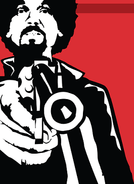

# Ave, César!
Caloni, 2016-08-01 <cinema> <movies> [up] [copy]O próprio ato de se fazer filmes é um filme em si. Os irmãos Coen (Bravura Indômita, Fargo, O Grande Lebowski) elencam um alto escalão para fazer parte de uma série de desventuras em várias produções hollywoodianas. Com diferentes gêneros, atores, diretores, roteiristas e figurantes, o filme nos convida a repensar a própria vida sob a lógica do faz-de-conta que tem encantado gerações de famílias. Até, é claro, o surgimento da TV.
Estamos em algum lugar no tempo onde o cinema mudo deixa de existir, os épicos e adaptações da Broadway começam a pipocar. O diretor de uma produtora de Hollywood vira uma espécie de investigador de filme noir (ou o cara que faz o trabalho sujo). Ele nunca dorme, mantém as horas sob controle em seu relógio e se confessa na igreja com frequência. São pecados leves, como não conseguir parar de fumar como a mulher o pede. Mas, dentro do seu subconsciente, ele sabe estar fazendo algo de muito errado.
E é isso que encanta no novo filme dos irmãos Coen. Seus personagens vivem em uma farsa sem se darem conta. Uma gangue de comunistas protagoniza uma sequência anacrônica com toda a convicção (dando a deixa para homenagear todos os clichês de filmes de espião da guerra fria). Um astro do faroeste mudo sofre para dizer uma fala em um drama (e até isso já virou tema de filme no excelente O Artista). Até os jornais de fofocas recebem sua dose de absurdo, com uma dupla de gêmeas (Tilda Swinton) que brigam entre si para conseguir a melhor notícia bombástica sobre as celebridades, que estão sempre a postos para aprontar.
O difícil nesse filme é apontar quem está melhor no elenco, pois este é afiadíssimo e está inspirado e cheio de energia; ele impressiona desde Scarlett Johansson e sua versatilidade, logo depois de uma sequência aquática de tirar o fôlego, vista de cima e por outros ângulos, até a pequeníssima ponta de Jonah Hill que faz valer a pena sua participação. Mas por ser a âncora de tudo isso e por ter o seu drama escancarado de maneira dúbia, o personagem de Josh Brolin, o diretor Eddie Mannix, é o que mais fica em evidência. Com uma rotina de empresário, ele orquestra toda a loucura que são as produções do estúdio onde trabalha, incluindo manter a sanidade das estrelas; imerso por inteiro nessa vida, ele negocia até com o professor do filho uma posição no time de beisebol, embora quase não consiga ver o próprio filho. Chega tarde da noite para jantar a comida requentada da esposa, para logo depois ir para o segundo turno. A vida de Mannix é dura, e Brolin consegue retratá-lo com uma sensibilidade que transparece por trás de seu jeito às vezes durão, às vezes de pai amoroso.
Mas é Alden Ehrenreich a grande surpresa, que entre todos os figurões, fazendo o ator de faroeste Hobie Doyle no melhor estilo John Wayne -- mas apenas o lado ator -- Doyle é o exemplo de astro que cresce graças ao movimento de dezenas, centenas de pessoas tentando criar a mágica do velho oeste enquanto o rapaz realiza piruetas e diz seus diálogos monossilábicos. Sua curva de herói é a mais inusitada e simpática da trama, mas nem isso os diretores cínicos conseguem tornar ingênuo.
Junto de tantas atuações, quem brilha também é a fotografia absolutamente deslumbrante de Roger Deakins (Bravura Indômita, Os Suspeitos de 2013), que consegue oscilar de uma maneira sutil entre tantos ambientes diferentes de produções distintas e ainda assim unir tudo sob a luz de uma Hollywood icônica, idílica, eterna e nunca mais alcançável; a sequência com o submarino será a mais icônica e bela entre várias. É curioso que a direção de arte de Cara Brower consiga realizar a dupla função de mostrar os cenários e a equipe de produção por trás das câmeras que são filmadas, tudo isso ilustrado de uma maneira igualmente iluminada pela música de Carter Burwell, que realiza um pastelão sutil e que ecoa através de todos os sets de filmagem sem ser percebido.
Talvez esse seja mesmo a maior virtude de "Hail, Cesar!". As pessoas que vivem nesse microcosmos ilusório realmente acreditam não estar em um filme, mas por viverem de maneira tão alheia à outra realidade -- que nunca vislumbram -- acabam fazendo parte do grande filme da vida quase que de passagem. O ator dramático Baird Whitlock (George Clooney vivendo um Charlton Heston mais canastrão) vai parar em um momento do filme no meio de uma sala de comunistas. George Clooney faz seu personagem parecer que nunca saiu para ver a vida lá fora, e basta uma tarde com esse grupo de malucos para ele se convencer das teorias de Marx e se sentir em casa. Esse ator nessa situação somos nós, espectadores, acreditando em cada quadro, cada cena e cada sequência da história que nos é contada na sala de projeção. Nossa ingenuidade volta a cada filme que vemos, na sala escura do cinema.
# A Comunidade
Caloni, 2016-08-04 <cinemaqui> <cinema> <movies> [up] [copy]A Comunidade é um filme que consegue ser doce em sua abordagem de paz e amor, mas ao mesmo tempo consegue desenvolver um tema mais maduro. É fascinante acompanhar a vida daquelas pessoas formando um mosaico de personalidades que cooperam entre si para o bem comum. Mais fascinante ainda é perceber como o filme avança seu tema sem ter medo de arriscar tudo que havia conquistado uma hora atrás.
A história começa quando Erik (Ulrich Thomsen), um professor de arquitetura, vai receber como herança a casa que havia habitado na infância em sua terra natal. Grande para ele, a esposa Anna (Trine Dyrholm) e a filha adolescente Freja (Martha Sofie Hansen), o custo proibitivo de mantê-la torna a ideia de vender automática, exceto pelo desejo de mudança de ares da mulher, que convence o marido a convidar amigos e conhecidos para morarem juntos e assim dividir os custos, além de fazer companhia.
No início o filme torna bem óbvio a disparidade de ideias que está por vir, e de certa forma até a influência que morar em uma casa coletiva exerce. Enquanto um realiza o desejo de ter um velho "amigo" (o ótimo Lars Ranthe) morando junto, outro desponta uma paixão baseada em admiração. Há um choque de gerações. Um duplo choque. Tudo isso não faz parte da primeira metade do filme. Nela apenas se monta a base para o que está por vir.
Mas não é só do óbvio que se constrói a trama. Âncora de um telejornal conservador, Anna anuncia uma nova onda da esquerda política. Do reflexo da televisão desligada, sua observadora filha enxerga o conflito de ideias entre seus pais. Da doença de um garoto que poderá gerar sua morte precoce (o perfeito, ainda que novo, Sebastian Milbrat), percebemos na inocência a efemeridade da vida. Tudo colabora para que através da comunidade se perpetue a mensagem de carinho, amizade e solidariedade.
Porém, o filme não é assim tão ingênuo. Apresentando em seu segundo e terceiro atos uma trama quase deixada de lado pela leveza da história, a direção precisa quadro a quadro de Thomas Vinterberg (A Caça, Submarino) aos poucos admite que há algo de errado com aquele ideal do amor livre dos anos setenta. Ele não esfrega isso na nossa cara, mas nos tortura jogando a realidade na tela: não temos ainda esse nível de maturidade, ou o perdemos ao tentar algo diferente.
O que se torna mais doloroso ao constatar que "o sonho acabou" é que o design de produção também se entrega por completo à época, recriando um mundo onírico saudosista. A fotografia de Jesper Tøffner com cores pálidas é lindo e triste ao mesmo tempo, e aliada à direção de arte exata ainda que minimalista nos joga em um mundo que não queremos sair graças às pessoas que nele habitam. Esse mundo de compreensão e colaboração é onde queremos viver. É como se os 70 fossem reciclados em uma versão melhorada, embora misturada com uma nostalgia melancólica.
Melhor que isso apenas a escolha certeira de músicas, que são famosas e soariam gratuitas não fosse o universo especial que elas enchem de cor. A trilha sonora de Fons Merkies acrescenta ainda um tom particularmente contemplativo e misterioso -- no sentido de deslumbramento -- àquele mundo.
Começando de maneira simplória e terminando um arco que foi se anunciando aos poucos, A Comunidade acaba sendo não um estudo de personagem, embora possa ser confundido como tal, mas como um estudo de toda uma geração. E não as 70, mas a nossa. Porque por mais compreensivos e desimpedidos de preconceitos/estereótipos que possamos nos auto-declarar, alguma coisa sempre está no caminho. Se isso atrapalha experiências humanas melhores, ou é algum instinto de auto-preservação, ou até outra coisa, é um mistério. Mas apenas por tentar descobrir, o filme merece todo meu respeito.
# Modern Family - Primeira Temporada, Episódios 1 ao 5
Caloni, 2016-08-04 <cinema> <series> [up] [copy]Família Moderna é uma série que explora justamente o conceito que seu título sugere. Há um casal gay que adota uma criança estrangeira, há a imigrante nova que casa com o velho rico, que tem um filho que é mais maduro que o próprio velho. Há o casal americano padrão -- para preencher a cota, supostamente -- e basicamente é isso. Engraçadinho, sitcom, não sabemos se a ideia era retirar estereótipos ou reafirmá-los. Ou talvez tirar sarro de quem considera isso a vanguarda.
Talvez o maior problema da série é pegar carona nesse estilo já cafona e já clichê de "reality": os pseudo-documentários. Uma câmera na mão. É um modelo aparentemente fácil, se você não se importa com a coerência. Garante resultados mais realistas de uma situação que não possui o refinamento necessário ("Derek") ou é engraçado justamente por se infiltrar na mesmice de um departamento ("The Office"). No caso de Modern Family, parece simplesmente preguiçoso.
Aliás, tem sido assim com grande parte das séries americanas, que lotam a programação com câmeras na mão. Aparentemente, ninguém mais quer editar ou produzir conteúdo Eisensteineano. Simplesmente jogue o conteúdo na tela e vá trocando de contexto. É uma novela moderna, com gosto de indie.
No caso de Modern Family a experiência se torna mais medíocre ainda, já que a suposta câmera para a qual os personagens conversam não faz o menor sentido. Além disso, os dramas e situações vividos pelos personagens não possuem qualquer justificativa de existir apenas em famílias não-convencionais. Apenas a ideia de explorar o tema porque está na moda é revoltante.
Porém, é uma série divertidinha. Não provoca, não ofende e não explora nenhuma de suas "minorias" por conta de uma maioria. Apenas explora o estereótipo, o rebaixando a comédia de situação, para conseguir risadinhas simpáticas; exatamente como o (agora enlatado) The Big Bang Theory (que provavelmente irá terminar em um casamento).
# Stranger Things
Caloni, 2016-08-04 <cinema> <series> [up] [copy]A Netflix conseguiu mais uma vez. Usando seu algoritmo de análise do que o público quer ver, aí está justamente o que a grande massa adoraria ver: referências doentias aos anos 80 sem qualquer vergonha de se render ao clichê, ou apelar para emoções baratas. As pistas de uma série misteriosa aparecem na primeira cena que são usadas. Além de tudo, o roteiro é preguiçoso.
Note o primeiro episódio. Uma menina aparece do nada, e junto dela um ventilador. Por que esse ventilador apareceu de repente? Porque a menina tem poderes de o fazer parar, e por isso ele entra em evidência apenas na cena em que ela o para.
Nem a participação de Winona Ryder, acostumada com papéis em dramas um pouco mais profundos, faz a experiência deixar de parecer um Super 8 (J. J. Abrams) estendido. Isso porque, mais uma vez, estou apenas me atentando ao primeiro episódio. Acho que não tenho coragem de continuar mais que isso.
Até porque são episódios longos, que exigem que acompanhemos toneladas de referências de uma época que as pessoas que vivem em 2016 possuem uma paixão tão patológica quanto com Star Wars. Inexplicavelmente. Alienígenas, sobrenatural, tons de azul. Bicicletas. Nada parece ser demais nessa série, que saiu diretamente do mecanismo de busca de preferências de uma massa que possui uma seleção ampla no cardápio da sétima arte para se voltar eternamente no feijão-com-arroz. De 30 anos atrás.
Curioso como o que fascina mais as pessoas por trás da série, aparentemente, são as infinitas referências de trabalhos, esses sim, muito mais ambiciosos em explorar um tema. O tema por trás da série é explorar o que os usuários do serviço de streaming gostariam de ver. Claro que não há nada de errado nisso. Se houvesse, não teríamos um House of Cards no meio disso tudo.
Mas para cada House of Cards ou Sense 8 é necessário produzir vários Stranger Things. É a lei da mediocridade fazendo efeito. Não se produz bom conteúdo artístico apenas seguindo um algoritmo. Mas, seguindo um algoritmo, há chances de se produzir algo que o valha. Tanta chance quanto produzir conteúdo autêntico. É a audiência, estúpido!
# Criando Projeto C++ Console no Visual Studio 2015
Caloni, 2016-08-04 <computer> videos> [up] [copy]Esse vídeo é um experimento que estou fazendo para tentar começar a compartilhar conhecimento em vídeo. Para começar, acho que nada mais apropriado que criar um projeto novo no Visual Studio, não? Dúvidas, sugestões, críticas, todas bem-vindas. Compartilhem com aquele amigo que pensa em começar a programar (ainda mais se for em C++).
<https://youtu.be/Fw1wdM_vzzI>
Essa primeira tentativa saiu um pouco longa -- 10 minutos -- mas era para ser mais sucinto. Me perdi em alguns detalhes da estrutura do projeto, mas o objetivo era entrar um pouco mais a fundo, mesmo, abrindo os arquivos do Visual Studio "na mão" para ver o que tem dentro, e já dando dicas de como a depuração pode começar já na compilação.
Espero que gostem. Se quiserem vídeos mais específicos, é só comentar logo abaixo. Dependendo do retorno -- ou não -- talvez em breve continuemos o projeto fazendo um básico de depuração.
# Super
Caloni, 2016-08-05 <cinema> <movies> [up] [copy]Sinto muito, Marvel. Sorry, DC. Um dos melhores filmes sobre heróis dos últimos anos é Super. Não que ele tenha efeitos visuais de última geração. Nem que ele tenha um personagem carismático que faz piadinhas escolhidas a dedo pelos produtores (que não querem correr o risco de "subir a censura"). Também não é porque ele entope o roteiro de personagens mascarados, cada um com sua história de origem, rivalizando quem consegue maior tempo de tela. O filme não possui nada disso. "Super" consegue se desvencilhar de todos esses clichês e se sair ainda melhor que o ótimo e controverso Deadpool, justamente por levar o "controverso" às últimas consequências (e não ficar com medo do que o público irá pensar). O filme dirigido e escrito por James Gunn (Para Maiores, Guardiões da Galáxia) desconstrói o sub-gênero e ainda consegue sair por cima dos destroços. Ele descaradamente vai na fonte mística que deu origem à mitologia moderna e esfrega na nossa cara que não precisa muito para ser um herói. Basta lutar contra o mal. E quem é o mal? É aí que o filme surpreende ainda mais.
A história não seria nada sem as participações descontraídas, energizadas, inspiradas de seu elenco. Se até Kevin Bacon consegue com seu Jacques fazer seu braço direito duvidar de tamanho desvio moral do chefe, e a lindíssima Liv Tyler serve como um perfeito esboço que justifique qualquer tipo de loucura, é Ellen Page que nos representa, em toda sua loucura fanática, sua luxúria em corpo de menina e sua capacidade de unir uma criatura completamente caricata em um formato palatável. Ela consegue empalidecer a foderosa Hit-Girl (Chloë Moretz, Kick-Ass), que se envergonha e sai de fininho da sala.
E apenas a figura introvertida de Rainn Wilson conseguiria transformar um arco de herói em algo tragicômico sem perder o dom da graça. Seu Frank Darbo (Donnie Darko?) é tão inusitado, mas tão real, que quase conseguimos enxergá-lo naquela figura tímida que sussurra enquanto fala. Aliás, quase não importam suas falas. Olhe como seu rosto se contorce ao descobrir que o telejornal descreve o justiceiro do bairro como "musculoso". Olhe a sua miopia a respeito de sua esposa e entenda como o "laço eterno" de Deus se comporta na vida real. Veja a ilusão por trás de uma máscara virar realidade do dia para a noite.
Porque o fato é: estamos no mundo real, mas é a imaginação dos personagens (e a nossa) que fazem todo o trabalho. Frank se lembra apenas de dois momentos perfeitos em sua vida: quando ajudou um policial a capturar um fugitivo e quando beijou sua mulher em seu casamento. Portanto, quando a viciada mulher de Frank o deixa para ficar com o bandido do bairro Jacques, não é difícil enxergar onde isso irá dar.
Ou será? Qualquer pessoa normal esqueceria da desilusão amorosa em pouco tempo. Porém, o que acontece quando você acredita no laço divino do matrimônio e essa mesma pessoa (que coincidência) é "iluminada" por Deus? Ou, melhor dizendo, quando essa pessoa está procurando um motivo insano qualquer para conseguir dar a volta no diabo e justificar seu chamado divino? E o que acontece com a mente desse sujeito, que mistura revelações sagradas com uma sequência de hentai?
A direção de James Gunn torna tudo mais simples e rápido, mas estamos de fato assistindo a um drama pesado que graças à máscara de herói vira uma comédia de horror. Os fabulosos créditos iniciais, estilizados como desenho em papel de caderno, facilitam essa visão. Os cortes rápidos, e até o uso de efeitos semelhantes à série televisiva do Batman, demonstram de uma maneira eficiente como se constrói um "filme com capa" sem ser macabro demais.
Além do mais, a produção do filme se diverte imensamente com esse roteiro. A direção de arte coloca uma costura de trapos vermelhos de gosto extremamente duvidoso (mas como o diabo é vermelho, melhor chamar de carmim). Depois disso, seu carro se transforma no "Carmim-móvel", e até a chave que ele usa para bater nas pessoas é vermelha (quer dizer... carmim!).
Ao mesmo tempo, a fotografia de Steve Gainer deixa tudo colorido ao máximo do lado dos heróis, e com todas as cores drenadas do lado dos "vilões". Até o casal que fura a fila do cinema não tem cor em suas roupas. E quem disse que heróis precisam de tema musical? A trilha de Tyler Bates é divertida do começo ao fim, que junto de uma seleção musical frenética e uma edição idem, torna a experiência enxuta, mesmo se passando meses no processo.
Com uma produção modesta, um elenco de primeira e uma direção/roteiro que buscam a todo momento erguer uma discussão a respeito do que é "bem versus mal", moral, certo e errado e tudo isso que coisas como religião são usadas para envenenar a mente das pessoas -- hoje seriam os heróis, diga-se de passagem -- "Super" é mais do que um filme realista tentando se inserir no mundo fantástico desse gênero: é um trabalho irreverente e ao mesmo tempo ambicioso que tenta desconstruir a noção quase sempre equivocada de que combater o crime é algo que naturalmente é o certo a se fazer.
# Viagem Para Agartha
Caloni, 2016-08-05 <cinema> <movies> [up] [copy]Makoto Shinkai -- diretor/roteirista de inúmeros curtas (alguns na Netflix brasileira) -- é chamado constantemente de "O Novo Miyazaki", em referência ao animador e fundador dos estúdios Ghibli. Curiosamente o próprio Miyazaki é chamado de "Walt Disney do Japão". Mais curioso ainda é que Miyazaki, enquanto idealizador, se preocupa muito com a mãe-natureza em seus filmes, que é quase um personagem à parte (seja ela natural, como em Ponyo, ou sobrenatural, como em A Viagem de Chihiro). Já em Viagem Para Agartha, um filme sobre um mundo exótico dentro da Terra, Shinkai está muito mais preocupado com o interior dos seres humanos que retrata, já que seu filme se torna um eterno questionamento sobre a nossa dor -- muitas vezes eterna -- que sentimos quando perdemos alguém querido.
A história, que não tem pressa em ser contada, gira em torno da jovem Asuna, uma menina solitária que perdeu o pai quando criança e tem uma mãe que está sempre atarefada. Cuidando sozinha de casa por vários dias, Asuna ainda criou seu próprio mundinho debaixo de uma pedra na montanha do lado onde mora. Populado com mantimentos e livros, seu esconderijo secreto é o perfeito microcosmos do que está para acontecer em sua vida depois que conhece o professor substituto em sua escola; um viúvo que mora sozinho, e que mantém em sua pequena casa uma versão um pouco maior que o próprio cantinho de Asuna.
Depois de algumas reviravoltas iniciais envolvendo um menino mágico -- algo que serve para alongar o filme, que não consegue utilizar o pai da protagonista para a mesma função por ela ser muito nova -- Asuna e seu professor irão explorar o que o título brasileiro já acusa. Agartha é uma terra lendária no centro da Terra, lar de seres humanos mais evoluídos e que constantemente protegem a sua entrada dos seres da superfície, vistos através dos últimos milênios de conquistas e exploração das inúmeras civilizações que tentaram invadi-la.
Também é o nome de um dos planetas (fictícios) citados em Voices of a Distant Star, um dos primeiros curtas do diretor. Ao explorarmos a ainda curta filmografia de Shinkai, veremos que seus trabalhos dialogam entre si, com referências a personagens e situações.
Aliás, é extremamente frutífero comparar os traços desse seu trabalho inicial com as rebuscadas paisagens de "Viagem Para Agartha". Se em "Distant Star" há o lúdico e até o poético disfarçados de ficção científica, aqui é o mitológico dando vazão a vertigens visuais que lembram trabalhos mais complexos como O Senhor dos Anéis.
No entanto, como um cacoete das animações japonesas como um todo, e até um traço peculiar de seu roteirista, o filme frequentemente soa episódico, com diversos fades, que dão a sensação de cansaço em um filme não muito longo. Além disso, há a frequente exposição da história em diálogos dos personagens, que revelam convenientemente tudo que precisamos saber sobre aquele mundo, e embora ele vá se abrindo aos poucos, poucos momentos se igualam à primeira perseguição dos monstros que surgem das sombras.
Apesar de não encontrar de fato respostas para questões vitais do longa, como a saudade/dor dos entes queridos que se foram, "Viagem Para Agartha" dá tudo como resolvido enquanto conclui a história durante os créditos finais (outro traço do diretor). É no roteiro que se encontra a principal falha do filme, que embora visualmente arrebatador em alguns momentos, carece da sutileza narrativa ou da exploração melhor de seus personagens. Do jeito que está, embora seja um longa de duas horas, ele permanece um experimento poético vazio, mesmo que muito, muito bonito.
# O Jardim das Palavras
Caloni, 2016-08-06 <cinema> <movies> [up] [copy]Makoto Shinkai tem apuro visual. Adentrando em uma megalópole para narrar este conto intimista entre uma professora e um aluno, ele consegue encontrar os quadros perfeitos para animar e dar a sensação, através do som, de estarmos de fato experimentando um dia-a-dia naquela cidade movimentada que contém em seus dias de chuva um refúgio secreto entre duas pessoas.
É nos galhos dobrados de uma árvore, que ao sabor do vento raspam na água do lago, ou em um pássaro que sobrevoa em volta de um arranha-céu, ou até mesmo no movimento de um pé que brinca com seu sapato, que O Jardim das Palavras recebe um tratamento especial. Baseando-se no mistério para contar sua história, conhecemos essas duas pessoas que se encontram todos os dias de chuva. O filme tenta narrar o relacionamento entre eles, mas perde sua força justamente em seus momentos-chave, declarando para o espectador que não tem muita ideia do que fazer com aquela história, ou que seu desfecho será tão imprevisível que o próprio filme não sabe onde vai dar.
Mas tudo isso faz parte da estratégia do diretor/roteirista, que escolhe falar sobre a beleza de ser sapateiro, fazendo trabalhos únicos, para aos poucos, sutilmente, abrir a questão de como os seres humanos são únicos, e muitas vezes imprevisíveis. Além disso, escolhe o momento certo para nos deixar espiar o futuro dessas pessoas, onde aí sim se torna previsível e banal. Porém, até chegar esse momento, o curta-metragem já ganha contornos naturalistas que você não esperaria ver em uma animação.
# Batman: A Piada Mortal
Caloni, 2016-08-07 <cinema> <movies> [up] [copy]A relação entre Coringa e Batman sempre foi um ponto alto do universo do herói, como vimos em Dark Knight (Christopher Nolan, 2008). Em "A Piada Mortal", uma graphic novel específica de 1988, roteirizada por Alan Moore e ilustrada por Brian Bolland, essa relação já havia sido explorada de uma maneira bem peculiar.
A história (na animação) utiliza e apresenta a Batgirl como assistente do Batman, além de vítima de paixonite pelo herói. Barbara Gordon, filha do comissário da cidade de Gothan, é uma bibliotecária com conhecimentos avançados na arte de hackear. Sua função na trama logo se revela: ser usada como gancho para um "experimento" social arquitetado pelo Coringa. A partir daí, um pesadelo é formado enquanto aos poucos descobrimos a origem do vilão mais famoso de Gothan City.
Apesar de diálogos inspirados, quase filosóficos, a respeito da visão de mundo do Coringa e como ele, diferente do cinismo de Batman, consegue conciliar sua realidade simplesmente ignorando a racionalidade -- enquanto o cinismo do homem-morcego é relacionado de maneira curiosa com o seu eterno combate ao crime, que é apenas uma outra forma de fuga da realidade -- somente ver esses personagens sem uma narrativa que envolva um conflito essencial acaba por tornar a experiência fascinante pelos personagens em si, mas vazia de conteúdo/história.
Sim, há o plano do Coringa, que é usado como pano de fundo. Porém, ele é sutil demais para soar como o grande conflito, já que acompanhamos ao mesmo tempo a história do seu passado. Talvez tenha havido uma tradução errônea do que funciona nos quadrinhos, mas insuficiente no Cinema.
Dessa forma, quando o filme acaba, a sensação que fica é que ele apenas começou, pois não houve ainda um conflito suficiente para que tentemos identificar onde está a trama. Se perde tempo demais com o flashback da vida do Coringa, que rivaliza com a história principal. Tudo faz sentido, mas a narrativa do diretor Sam Liu e o roteiro de Brian Azzarello não entendem a troca de mídia no caminho.
# Warcraft: O Primeiro Encontro de Dois Mundos
Caloni, 2016-08-08 <cinema> <movies> [up] [copy]Warcraft consegue manter o tema de estratégia de guerra do jogo viva no filme; de quebra, exibe um dos melhores efeitos visuais do ano. Não aquele que impressiona por impressionar, mas o que está a serviço da narrativa. E com uma história para contar, ainda consegue estar à altura dos melhores trabalhos da produtora desse e outros games. A Blizzard, pelo jeito, não se cansa de impressionar.
Baseado em um video-game de RTS (Real Time Strategy, ou Estratéga de Tempo Real), que mais tarde se tornou um RPG consagrado, a história gira em torno dos detalhes de jogabilidade, como o uso da magia em ambas as raças, o poder guerreiro dos orcs, além de seu respeito incondicional às suas tradições, e a habilidade na política dos seres humanos.
Mas eu disse duas raças? Warcraft no filme de estreia já ensaia abrir uma franquia que possui um potencial interessante. O mundo dos humanos é pacífico, e lá habitam diferentes raças em harmonia. Há um quê de Senhor do Aneis em muitos momentos.
No entanto, o foco desse filme é mesmo a batalha entre humanos e orcs. Tendo seu mundo destruído, os orcs realizam uma "migração" graças ao uso de uma magia maligna, que suga a energia das pessoas -- de qualquer raça -- e produz um mana verde que permite abrir um portal entre dois mundos.
Há diferentes personagens de ambos os lados que lembram peças em um jogo de xadrez. O roteiro de Charles Leavitt e Duncan Jones (do ótimo Lunar) está a todo momento sugerindo nosso desconhecimento do que essas criaturas poderão ou não fazer, e qual sua função na batalha iminente. Ninguém no elenco se sobressai em particular, mas ninguém estraga a festa (com exceção de uma inexpressiva Ruth Negga como Rainha Taria, que felizmente tem pouquíssimo tempo de tela). A interação homem/orc é sempre interessante, e o roteiro acertadamente escolhe apostar mais nos diálogos do que em batalhas frenéticas.
Isso permite duas coisas. Primeiro observar a fabulosa direção de arte, que consegue transformar um universo criado para um jogo em algo mágico, mas ao mesmo tempo realista, evocando a grandeza do império humano e a sociedade tribal dos orcs. Mais do que isso, porém, é ficar a todo momento percebendo os inúmeros detalhes do rosto dos orcs, que consegue expressar um rosto humano na cara de um monstro, e soar perfeitamente crível a todo momento (diferente de um pássaro gigante voador, que oscila entre o muito bom e a falta de cuidado da computação em torná-lo muito destacado do ordinário).
Mais do que uma historinha para justificar uma batalha épica, Warcraft é a (re)criação de um universo que já tinha sido feito com total esmero pelos seus idealizadores originais. Usando uma metáfora eficiente para a magia que suga a vida das pessoas (vulgo Estado), as diferentes formas de interpretar a história já valeria a pena até uma revisita. E isso apenas pela história, quando estamos falando de um espetáculo visual.
# Brazil: O Filme
Caloni, 2016-08-09 <cinema> <movies> [up] [copy]Terry Gilliam nos apresenta esse futuro distópico onde "Aquarela do Brasil", de Ary Barroso, é o tema musical perfeito para esse clima fabuloso, que transforma um drama grandioso em uma comédia séria, que trata de governos totalitários e o seu maior perigo: a enxurrada de papéis de uma burocracia sem fim, que pode engolir pessoas vivas. Nós sabemos vagamente que toda a ineficiência do governo acaba matando indiretamente milhares de pessoas todos os dias pelos erros de alocação de recursos. Porém, em "Brazil", basta um erro de tipografia e sua vida foi extinta, literalmente. Ainda bem que erros estatais nunca acontecem. Não é mesmo?
Seu herói, ou quase mais um espectador de tudo isso, é Lowry (Jonathan Pryce), Sam Lowry, que trabalha no Ministério da Informação (cuja sigla em inglês, MOI, além de estar impresso em todos os pertences de seus escritórios, incluindo xícaras de chá e aquários, já remete sutilmente a outro ministério, o "Ministry of Interior", que é o ministério que controla seus súditos e o que andam fazendo). Lowry sonha constantemente que tem asas e voa em busca de sua amada, uma loira de aspecto angelical que se encontra presa em uma jaula. De dia ele vive em um país sem nome que é controlado por formulários e regulamentações, e tem seu resultado nas invenções futuristas, como um sistema de encanamento que passa pelo meio dos recintos e recheia as paredes, além de carros pessoais extremamente inconvenientes, despertadores que não funcionam, computadores que têm suas telas ampliadas por uma tela que funciona como uma lupa, e um sistema de busca de inimigos públicos que consegue ser burlado por um inseto inconveniente (ironicamente, um ser voador, justamente como nosso Lowry).
Gilliam e sua criatividade estão totalmente sem controle, e seu universo é riquíssimo, como se alguém estivesse muito insatisfeito com a sutileza de 1984 (o livro e o filme de George Orwell) e quisesse fazer algo mais espalhafatoso, onírico, surreal e brincalhão. Coincidência ou não, a luva serve perfeitamente para os governos sul-americanos, cujo povo é conhecido pelo bom humor, mas que infelizmente passeia por crises a todo momento geradas pelo Estado e sua incompetência ululante.
Filmado com câmeras deitadas que evocam o clima utópico e sensacional daquela realidade, a direção de arte consegue criar ambientes internos ricos em detalhes, e fazer com que sequências em estúdio se pareçam com as tomadas externas de Metrópolis. O caos é representado por um corredor imenso de pessoas indo e vindo tirando e colocando papéis. A loucura da burocracia está confinada em um escritório de meio metro com uma mesa que é dividida com o vizinho através de uma abertura. Sua ineficiência é representada por um elevador que dificilmente funciona (exceto o do vice-presidente, é claro).
O ambiente de Brazil consegue brincar com diferentes nuances dessa realidade fantástica que não está muito longe da nossa própria realidade. Dessa forma, quando o ar condicionado do apartamento de Sam quebra, ele tem que usar um telefone com 12 pinos (os próprios usuários precisam fazer o papel de uma telefonista; e isso em um filme de 1985) e tentar chamar alguém do próprio governo para consertar; infelizmente nem sempre eles estão disponíveis, e é por isso que figuras como Harry Tuttle (Robert De Niro) acaba salvando o dia, trabalhando como autônomo. A parte triste é que por causa disso ele será confundido como um inimigo do Estado, o que não deixa de ser verdade (embora não justifique que ele seja assassinado; bom, pelo menos eu acho).
O importante é que tudo está sendo feito para a segurança de todos. É por isso que quando um suspeito é preso em sacos que ficam pendurados durante o inquérito isso é visto como normal. O Estado já nos tem como propriedade de qualquer maneira; qual a diferença entre estar em um saco ou estar em um minúsculo apartamento, provavelmente adquirido graças à bondade dos governantes?
A riqueza dos detalhes descreve também a obsessão por estética -- mais uma vez uma coincidência incrível com nosso país -- e o tom insosso dos alimentos de um restaurante chique. Se a mãe de Sam teve a sorte de ser operada com sucesso, o mesmo não se pode dizer de sua amiga, que está sendo levada lentamente ao leito de morte, cirurgia plástica atrás de cirurgia plástica (e note os pelos de seu cachorro também sumindo). E o restaurante chique tem a finesse de levar um cardápio em formato eletrônico que lhe dá oito opções enumeradas de pratos, que serão servidos como um purê de cores diversas do lado de uma fotografia do prato que você pediu, como um belo de um bife. Nada escapa aos olhos críticos e enlouquecidos de Gilliam, um dos membros do grupo de comediantes Monty Python.
No entanto, apesar de um filme visualmente impecável que consegue conduzir sua história de loucura (ou sonho) enquanto o apresenta, nada supera a ambição ao final do terceiro ato, onde somos levados a um portal que revela toda a engenhosidade de "Brazil" em descobrir a si mesmo como um gerador de vários insights por segundo, e uma triste constatação. Mas se anime. Não há tristeza em rir de nós mesmos como essas hilárias fazendas humanas cheias de formulários para preencher. Um dia talvez esses formulários nos engulam, mas essa é uma pequena desvantagem frente à segurança que o governo nos passa. Não é mesmo?
# Esquadrão Suicida
Caloni, 2016-08-12 <cinema> <movies> [up] [copy]As músicas deste filme faz com que o que ouvimos se torne infinitamente melhor do que o que vemos (e por "ver" eu quero dizer não só visualmente, mas as situações e os diálogos). Como prêmio de compensação, torna o pacote completo um pouquinho melhor.
Mas estou sendo um pouco injusto sobre o "ver". Afinal de contas, ver os personagens de Will Smith e Margot Robbie acaba sendo, em vários momentos, um deleite. No caso da última, física e espiritualmente. Robbie está incompreensivelmente centrada em um filme que não dá a mínima para seus personagens (embora se esforce em mostrar um punhado deles).
Tanto não dá a mínima que ele se concentra o tempo todo em explicar uma trama sem sentido desde o começo, justificando o que não tem explicação. Por outro lado, ele utiliza as explicações para reinserir personagens vistos no ultimo filme do universo DC, como Batman e Flash, de uma maneira desleixada, como se estivesse pagando uma dívida eterna para os fãs (ou plantando verde para colher maduro nas próximas produções).
Mas, afinal de contas, um filme desmiolado com anti-heróis idem deveria ser pelo menos divertido. Robbie concorda comigo, mas aparentemente é a única. O resto segue um roteiro turístico sem sequer apreciar a paisagem (que no caso é uma Nova York mais uma vez aos pedaços). Robbie e Smith ao menos olham para a janelinha do ônibus, e mesmo que Smith viva mais uma vez o pai amargurado, pelo menos convence.
Já os outros personagens, que diferem em praticamente nada (talvez o Crocodilo... mas só um pouco), estão tão dispersos e anestesiados que não enxergam de fato a história, mas inúmeros fundos verdes com quem precisam interagir para ganhar seu cachê. Há muitas explicações de por que essas pessoas são a elite do mal, mas muitos poucos motivos no filme para realmente acreditar nisso.
Existe um outro potencial personagem para se juntar ao grupo dos "descolados": o Coringa. No entanto, Jared Leto não consegue relaxar em momento algum, criando um contraponto negativo com o Coringa anterior, esse "maluco beleza", pois sacrifica a única coisa que o tornava mais interessante que seu amigo morcego: a cuca fresca. E, convenhamos, rir freneticamente de tudo o que faz, sorrir ou colocar sua mão na frente da boca (com um sorriso desenhado) não é o que podemos chamar exatamente de "construção de personagem".
E por falar na dupla de amantes, Arlequina poderia se virar muito bem sem uma explicação de sua origem (assim como o Coringa anterior, que se beneficiava ainda de suas múltiplas histórias). A Warner acaba de queimar um excelente cartucho para um filme solo (a menina merece!) já mostrando a transformação entre uma jovem psicóloga inocente para essa mente perturbada e corpo lascivo que não se encontram exceto quando está com seu grande amor.
Esquadrão Suicida, por outro lado, esbanja efeitos visuais -- que são quase invisíveis para quem assistiu à versão 3D, graças à ideia estúpida de filmar com o mesmo nível de claridade na versão em 2D, ignorando que os óculos permitem apenas a passagem de metade da luz para cada olho. Há algo de tenebroso e erótico na vilã, a Bruxa, que não me fará esquecê-la por um tempo. Não tanto pela personagem, cuja dupla personalidade (ou espírito) é bobinho. Não entendo como um espírito milenar aguentou usar o corpo de uma arqueóloga jovem e totalmente desinteressante.
Por fim, a bagunça dirigida e escrita por David Ayer (do ótimo Corações de Ferro) não convence em praticamente nada. É um faz-de-conta que não consegue sustentar nenhuma de suas premissas. Entendemos que é um mundo fantasioso, mas até a fantasia tem suas regras. A regra de Suicide Squad é nunca revelar quais são as regras. E nem isso ele convence, já que ele decide usar algumas regras na hora de resolver conflitos (todos convenientemente nos seus lugares). Sabe como é: há uma franquia que deve ser cuidada.
Se cuida, Marvel. Há outra produtora de capas e máscaras tão medíocre quanto você.
# Gênios do Crime
Caloni, 2016-08-12 <cinemaqui> <cinema> <movies> [up] [copy]Gênios do Crime não é o melhor momento de ninguém do seu elenco. Porém, também não é o pior. É apenas aquela sensação de que já vimos isso antes, e embora não exatamente daquela forma, não chega a ser tão diferente de qualquer comédia de situação. E, como eles mesmos no filme admitem, ainda é um filme de roubo a banco. Sim. Mais um filme de roubo a banco.
Esse, baseado em eventos reais, de um dos maiores roubos (em valores monetários) da história dos EUA, não tem muita margem para mudanças, mas elas acontecem e aos montes. Não estamos diante de atores acostumados com verossimilhança, então a primeira e marcante mudança é que os personagens não fazem a mínima ideia do que estão fazendo. Mas o fazem de qualquer jeito.
E se em comédias parecidas -- no sentido de ser baseada na vida real e ser sobre criminosos -- como O Golpista do Ano ainda há o fator de que a realidade ultrapassa a arte, o que justifica Jim Carrey pelo seu exagero, aqui se torna difícil acreditar que tudo o que de fato ocorreu sequer foi levemente semelhante ao que vemos no filme, com as pessoas que vemos.
Dessa forma, as figuras montadas por Zach Galifianakis, Kristen Wiig, Owen Wilson e Jason Sudeikis (e até a simpática Leslie Jones) soltam seus diálogos despropositados e engraçados apenas pelo absurdo, mas não como uma forma de pontuar que apenas tal personagem diria tal coisa, pois isso é aparentemente irrelevante para os propósitos do filme, que é fazer rir apenas pelo absurdo destacado de contexto (como dar um tiro na própria bunda).
Não que eles não estejam bem. Porque estão (como constatei no primeiro parágrafo). Só que estão atuando para o filme errado. O roteiro escrito a seis mãos (que contou ainda com a consultoria de alguns dos envolvidos no roubo de verdade) não consegue se situar nem entre o drama engraçado ou a comédia escrachada. É simplesmente uma história que vai se desenrolando com o tempo suficiente de projeção para que os atores digam suas falas e encenem as situações engraçadas.
Nesse sentido, Gênios do Crime até é engraçado, embora não seja hilário. Para chegar no hilário precisaríamos nos preocupar com seus personagens. Algo que é querer demais quando sequer os entendemos além de seus estereótipos.
# O Funcionário do Mês
Caloni, 2016-08-12 <cinemaqui> <cinema> <movies> [up] [copy]Uma comédia de absurdos nunca será tão absurda quanto uma comédia italiana. E "Funcionário do Mês" é um exemplo clássico: é escrachado do começo ao fim, se valendo não só dessa fama italiana do funcionalismo público, do "jeitinho italiano" (ah, essa herança...), mas também do comodismo e do estereótipo da família (italiana, claro). Na verdade, é melhor ainda, pois ao criticar o mundo "incivilizado" que o italiano médio vive, o filme também escracha o lado "civilizado", escancarando o diferente, o divergente, a multicultura. Sempre pelo exagero, claro! Eu comentei que essa é uma comédia italiana? Capisce?
O filme já começa com uma série de desventuras que colocam Checco Zalone (Checco Zalone), o herói da história, explicando a história de sua vida para uma tribo africana, que não entende frases simples em italiano, mas entendem toda a narrativa do herói.
Explicando que ser funcionário público está no seu sangue (seu pai que o influenciou a seguir o caminho da estabilidade, da vida fácil e do mecanismo infindável de privilégios), Zalone explica como sua vida era perfeita trabalhando em um escritório regional de caça e pesca, sendo mimado pelos seus pais, pela sua namorada e família. Tudo por ser funcionário público, uma conquista para a vida toda.
Seria para a vida toda se não fosse a reforma conduzida por um político, que começa a profissionalizar os cabides de emprego e conduz Zalone para um jogo interminável de transferências pela Itália que o acaba colocando no Polo Norte, na Noruega. Lá ele conhece Sironi, o clichê de ecologista/salvadora do mundo. Junto com ela, Zalone também descobre na Noruega a diversidade de ideias, do respeito mútuo, dos seis meses de dia e seis meses de noite, e do suicídio.
Sim, "Funcionário do Mês" não se priva em momento algum de fazer piada de qualquer coisa. Ele quase perde sua humanidade ao fazer joça do próprio protagonista, que é intenso em qualquer coisa que faça -- seja buscar suas regalias públicas ou viver como um norueguês -- mas graças ao surpreendente desempenho cômico de Checco Zalone e a sua versatilidade em nunca deixar sua autenticidade, o que faz sermos levados a crer nesse universo, por mais absurdo que seja.
Zalone assina o roteiro junto do diretor Gennaro Nunziante, que aqui aplica um "truque" muito eficaz em comédias desse tipo: ao filmar cenas rápidas (que se tornam ainda mais rápidas na edição), o filme nunca nos dá nenhum tempo suficiente para reflexão; se torna uma enxurrada interminável de piadas, criativas e bem colocadas (além de estarem dentro do contexto da história). Essa é a clássica pornochanchada, mas com jeitinho ideológico, e há vários acontecimentos que se sucedem, sempre dando espaço para piadas espirituosas, ou no mínimo simpáticas sem soar repugnantes; até porque o povo italiano aprendeu a rir de si mesmo, o que comprova a eficácia de filmes como esse, que faz joça de uma nação inteira de acomodados.
E, por que não, de qualquer nação. A própria existência de países já comprova a inclinação do ser humano de buscar estabilidade na vida a qualquer custo. Nem que seja ao custo dos outros.
A grande piada, ironicamente, é que isso não parece nada civilizado.
# Depurando código C++ no Visual Studio
Caloni, 2016-08-12 <computer> <videos> [up] [copy]Olá de novo. Este é o segundo vídeo da série "o que que eu tô fazendo no YouTube?". Dessa vez abri o Visual Studio para depurar um código de 10 linhas com um bug absurdamente absurdo, mas que pode enganar muita gente. Há quem acredite que esse bug foi proposital, mas não foi. O importante é que ficou muito legal. Vamos ver?
<https://youtu.be/78bYgerQVt4>
Pra começo de conversa, é importante ressaltar que este é um vídeo introdutório, para quem deseja começar a programar em C++, ou até para quem quer alguma dica de uso da IDE do Visual Studio. Já trabalhei algumas décadas (uma e meia) com a ferramenta, quando ainda se chamada Visual C++ e foi horrorosamente renomeada para Visual Studio .NET (arght!!!). Com o tempo fui me acostumando com a lerdeza cada vez mais crescente da ferramenta, acreditando piamente que um dia iriam transformar tudo em Java para ficar mais rápido.
Acho que não foi o caso. De qualquer forma, o vídeo acima tem o potencial de funcionar em quase qualquer versão do Visual Studio. Portanto, não se acanhe se ainda está mexendo em projetinhos jurássicos com o .NET 2003 (eu estou, mas só abro em emergência). Tudo deve funcionar exatamente como está no vídeo.
Ou não. Nesse caso, RTFM ou comente aqui =)
# DBAccess
Caloni, 2016-08-16 <computer> [up] [copy]Bancos de dados são uma dor de cabeça para o desenvolvedor acessar. Quase tão motivation killer que as configurações do .NET. Se for um programador em C++ para Windows, então, desista.
O DBAccess é mais um dos códigos-fonte desenterrados dos meus backups. Esse eu usei já em vários projetos, porque é simples e rápido de usar.
class DBAccess
{
public:
/// Factory para base de dados específica.
/// @param database Pode ser "sqlite" ou "oledb".
static DBAccess* CreateDBAccess(const std::string& database);
typedef std::string ColumnName;
typedef std::vector<std::string> Rows;
typedef std::map<ColumnName, Rows> RowSet;
virtual ~DBAccess() { }
virtual bool Connect(const std::string& connectionString) = 0;
virtual bool Disconnect() = 0;
/// Executa uma instrução SQL e retorna opcionalmente os resultados (se for uma query).
virtual bool Execute(const std::string& command, RowSet* response = 0) = 0;
};
Sua função é abstrair a abertura de um banco de dados, sua execução e sua saída. Para isso ele cria uma interface simples que usa STL. Por debaixo dos panos, usa OLEDB, que abstrai qualquer coisa, só precisando de instalar o driver e aprender qual das 500 mil combinações é a string de conexão correta. Para não ter que usar outras funções para coisas simples como sqlite, foi incluído seu suporte (que é mais uma tradução entre interfaces), necessitando para seu uso daquele projeto do sqlite que contém um header e um .c (pelo jeito o pessoal desse projeto também gosta de simplificar as coisas).
O código que trata o OLEDB é um pouco grande (umas 300 linhas) por conta da manipulação dos componentes COM. Porém, feito decentemente, faça uma vez e use um milhão (ainda falta fazer alguns unit tests, aliás).
IDataInitialize* pIDataInitialize; IDBInitialize* pIDBInitialize; IDBCreateSession* pIDBCreateSession; IDBCreateCommand* pIDBCreateCommand;
É um bom projeto para entender o uso da minha batidíssima biblioteca de parsear argumentos argv/argc (Args.cpp/h) e a mais batidíssima ainda biblioteca de Log, que utiliza variadic templates para se livrar da maldição dos crashs causados pela falta de tipagem do printf e derivados (em Log.cpp/h).
Além disso, observe como o uso de interface permite que os headers específicos do que tem que ser feito (e.g. oledb.h, atlbase.h, msdasc.h, sqlite.h e até windows.h) não precisa necessariamente estar presente no header da interface (oledb.h), e como o uso de um factory em um método estático da interface permite que a junção das tecnologias envolvidas fique apenas no oledb.cpp. Dessa forma, para retirar ou acrescentar novas formas de comunicação com um banco de dados é muito simples.
_PS: A publicação do __DBAccess__ foi inspirada na thread iniciada por Spagiari no nosso grupo C/C++._
# Electrum: uma opção simples e rápida de manter bitcoins seguros
Caloni, 2016-08-16 [up] [copy]Estava já há algum tempo pesquisando as melhores ferramentas para organizar carteiras bitcoin. E quando se fala em ter seus próprios bitcoins, a segurança deve ser prioridade número zero. Isso porque, diferente de bancos, quando você se dispõe a gerenciar seu próprio cofre, é você, e apenas você, o único responsável pela sua integridade.
Isso quer dizer que apenas uma senha protegendo sua chave privada talvez não seja necessário. Algum hacker ou programa malicioso instalado na sua máquina (como um keylogger) pode facilmente obter essa informação.
E, sim, é preciso pensar que pode haver um keylogger em cada teclado que você for usar para digitar sua bendita senha. Por isso ter uma senha segura, no caso de bitcoins, não funciona muito bem.
Além disso, há também a segurança dos próprios dados. Não de serem roubados, mas perdidos. Nesse caso, uma estratégia muito interessante, por acrescentar entropia e comodidade, são as carteiras determinísticas. Elas se baseiam em um grupo de palavras que são usadas para gerar o par de chaves pública e privada e derivar as próximas chaves de sua carteira. Com isso, basta guardar (em papel, no seu cérebro, mas nunca em software!) essas palavras que você poderá resgatar sua carteira, reproduzindo o algoritmo de derivação.
Outro ponto importante, para os mais paranóicos, é conseguir gerenciar carteiras "frias", que são carteiras que não podem ser usadas para gastar, apenas para receber. Funciona assim: você gera o seu endereço público para a transação, onde as pessoas podem depositar seus bitcoins, mas a chave privada, necessária para enviar bitcoins dessa carteira, é removida ou não está disponível. Dessa forma, ela vira uma carteira "watch-only", em que o portador só consegue verificar o saldo e as transações, mas não realizar uma (a não ser que ele assine a transação em outro computador com a chave privada, ou resgate a chave privada de algum lugar, que seria o lugar "quente").
Esse cold storage de carteiras, como é chamado, só é possível de duas maneiras: sendo você próprio um servidor da blockchain ou utilizando a infraestrutura da nuvem para validar as transações. A primeira forma é muito custosa, pois a blockchain cresce a olhos vistos, e demora hoje alguns dias para resgatar toda ela desde 2009. A segunda opção é mais rápida, mas depende da integridade dos servidores, libera mais informações sobre as transações do que devia, além de ser lento.
Dentro dessa segunda opção, porém, existe uma maneira rápida de verificar a transação sem comprometer seus dados, enviando coisas a mais para o servidor que irá validá-lo. Se chama Simple Payment Verification, e já estava prevista no paper original de Satoshi. Ela se baseia apenas em uma árvore de hashes montada justamente para compor a blockchain. Gerenciar essa informação economiza muito mais tempo e processamento, além de liberar apenas a informação essencial para os servidores validarem.
Todos esses elementos estão juntos no Electrum, uma ferramenta feita em Python que possui uma versão monolítica (um exe apenas) para Windows e que mantém as carteiras em texto plano em sua máquina. Sim, não há criptografia desnecessária. Afinal de contas, só a chave privada é que precisa ser protegida, e ela é aberta apenas durante a assinatura de uma transação, tornando todo o processo muito rápido.
Em sua página é possível tirar todas as dúvidas de como fazer uma carteira offline (fria), como apenas assinar transações, como gerenciar as carteiras, em que arquivo elas ficam, o que comem, etc. Estou usando e estou muito feliz, pois é o primeiro software que gerencia bitcoins que consegue a proeza de ser simples de usar, flexível e rápido.
Ah, e ainda possui um console em Python, para rodar seus programas =)
# Hardcore: Missão Extrema
Caloni, 2016-08-16 <cinema> <movies> [up] [copy]Este não é um vídeogame, mas um filme que utiliza completamente a estética dos jogos de tiro em primeira pessoa. Ele tem uma narrativa coesa, e ainda que não tão bem articulada, qual filme de ação você conhece que consegue ser tão realista a ponto de enxergarmos toda a ação do ponto de vista do mocinho? Pior: que filme de ação hoje em dia consegue te entregar todo o pacote 18+, com direito a sangue, esquartejamento, esmagamento, esfaqueamento e outros "mentos" por aí, e não aquelas brincadeiras de criança da Marvel?
Além disso, apesar da premissa simples (mocinho se vê em apuros e tem que sair dele) há várias ideias interessantes por trás de "Hardcore Henry", que piscam para os gamers, mas que consegue extrapolar isso para a sétima arte. As múltiplas vidas de seu amigo Jimmy é apenas a mais óbvia. O que dizer do vilão, um ser que consegue controlar através de sua mão objetos e pessoas, fazendo-os flutuar? E de quem é a brilhante ideia de utilizar memórias de jogos... quer dizer, vidas passadas -- ou implantadas -- para trazer motivação por trás dos ciborgues construídos em cima de seres humanos, senão a de um "gamer" (que, no caso, é justamente o vilão do filme por manipular seus "soldados")?
Além disso, há longas sequências de ação, com cortes que não incomodam. O filme começa meio desajeitado, mas aos poucos vamos aprendendo essa dinâmica. Há um tom futurista, mas não muito. A bio-engenharia é o ponto mais interessante desse mundo. A fotografia consegue às vezes manter a coerência de iluminação mesmo entre dois cenários extremamente distintos (como um corredor mal iluminado e uma sala com computadores e uma grande janela). A edição está, como em apenas uma longa sequência, na elaboração dos objetos e atores em cena.
E para o gamer é claro que há uma "recompensa". Imagine qualquer fase de seu game favorito, e provavelmente ela estará no filme. Há uso de quase todo tipo de arma, lutas corpo a corpo, estratégia de guerra, explosões, granadas, cenas aéreas. É um filme, acima de tudo, de sensações. Há um roteiro -- escrito pelo próprio diretor, Ilya Naishuller, que ficou famoso após seu excelente curta ganhar 30 milhões de visualizações no YouTube -- mas ele não precisa ir muito além. O humor utilizado na figura de Jimmy é mais que o suficiente. O vilão, infelizmente, é meio unidimensional. Mas, mais uma vez... estamos acostumados com isso, não?
# Loucas de Alegria
Caloni, 2016-08-17 <cinemaqui> <cinema> <movies> [up] [copy]Loucas de Alegria, apesar do título e das protagonistas com problemas psicológicos, é um retrato realista e encantador sobre amizade incondicional, mesmo que sua amiga tenha impulsos suicidas ou tenha cara de pau de aplicar golpes por onde quer que passe. Em seu momento mais lúdico ele homenageia "Thelma & Louise", o clássico de Ridley Scott, o que, naquela altura da campeonato, é uma das licenças poéticas mais bem-vindas e muito apropriada.
A história começa quando Beatrice Morandini Valdirana (Valeria Bruni Tedeschi) conhece Donatella Morelli (Micaela Ramazzotti). Ambas estão internadas em um manicômio rupestre, não só pagando pena pelo que fizeram em liberdade, mas se tratando de seus distúrbios. Beatrice é bipolar, Donatella é depressiva. E ambas "se divertem" tomando os diferentes tipos de remédios que lhe são prescritos, em uma divertida reverência à nossa geração prozac.
Vamos conhecendo aos poucos a história das duas, pois nada é revelado gratuitamente em diálogos expositivos, mas a partir das experiências que passam juntas. Mas mais importante que detalhes narrativos, o importante no filme é entender as personalidades desses dois seres humanos, e como eles se parecem com um amigo ou conhecido, às vezes em detalhes sutis como o jeito de falar rápido e trocar de assunto, outras vezes pelo carisma magnético que elas possuem. Note como uma união improvável começa a fazer sentido naturalmente, e como a "loucura" das duas é apenas um distúrbio comum, extrapolada pelos seus problemas e traumas pessoais.
Beatrice é uma inquieta, a todo momento. Suas falas rápidas e sua ingenuidade em continuar vivendo como se fosse uma senhora importante da sociedade é tão contagiante que ela acaba levando o filme nas costas. Boa parte dessa eficácia obviamente deve ser creditada à performance naturalmente arrebatadora de Valeria Bruni, que faz lembrar Amanda Plummer no excelente-mas-pouco-conhecido "O Beijo da Borboleta". Outra parte da eficácia de sua personagem deve ser atribuída à direção de Paolo Virzì, que faz cortes rápidos para sua personagem, além de aplicar uma câmera na mão que torna tudo mais imediatista (além de realista).
Essa abordagem, diga-se de passagem, destoa completamente do que vemos a partir de sua amiga depressiva, Donatella, que além de baixa, é encarada em muitos momentos pela câmera em cortes mais lentos e estáticos que a enfocam por cima ou nas sombras, o que a ajuda a tornar-se ainda mais baixa e insignificante. E boa parte dessa sensação também pode ser atribuída à atriz Micaela Ramazzotti, que encurva as costas, como se carregasse o peso eterno do que tinha feito. O seu modo de aos poucos se abrir pelo mundo onde é convidada por sua nova amiga é tocante, e as farpas que recebe de seus pais doem, mas servem para a atriz brilhar ainda mais em uma pequena pérola de performance, onde a sutileza consegue torná-la ainda mais complexa que a expansiva Beatrice. Donatella, aos poucos vemos, é uma mulher atormentada não pelo que fez, mas principalmente pelas consequências dos seus atos. É difícil ter empatia por uma pessoa acusada de um ato horrível. Porém, é a capacidade da Micaela Ramazzotti de construir uma personagem complexa aos poucos -- que praticamente não consegue sorrir -- aliada às revelações de sua vida, que vão construindo seu drama pouco a pouco -- como a real, decepcionante, mas reveladora relação com o pai.
E se estou contendo até agora todos os possíveis spoilers da história, mesmo os mais periféricos, é porque este é um filme que o espectador merece degustar cada momento, e escalar cada degrau desta história. Sinto muitos pelos que já viram o trailer; os desdobramentos do roteiro de Paolo Virzì e Francesca Archibugi são tão empolgantes, e tão bem aproveitados pelas duas atrizes, em total sintonia com o projeto, que vale a pena uma primeira assistida inocente.
Mesmo que este não seja um filme "de uma vez só", pois é fácil de se apaixonar por essas duas garotas e querer revê-las. Ao escancarar suas duas trágicas vidas, o desejo honesto de qualquer ser humanos é abraçá-las e as consolar, apesar de tudo. Apenas não daria para dizer que tudo vai ficar bem, pois quando você vive intensamente como essas duas, os resultados são imprevisíveis. E isso é estranhamente ótimo.
# Se não está funcionando direito, mexa!
Caloni, 2016-08-17 [up] [copy]Uma breve história de um chuveiro: O de casa às vezes inventa de dar choque. Isso desde que me mudei (uns 2 anos e meio). Não são choques brabos, daqueles de fazer a pessoa tremer. É apenas uma quase estática ao tocar no registro para abrir ou fechar a água. No entanto, já é motivo para pessoas mais sensíveis, como minha sobrinha de oito anos, se recusar a encostar no registro. Frecura.
(Pensando bem, quando eu era criança, tinha até medo de ficar no mesmo quarto onde havia fiação desencapada, mesmo sem energia.)
De uma semana pra cá, agora o chuveiro tem "aprontado" outra: ele desliga. Do nada. Não há nada de errado com a resistência, nem com os fios, e depois descobri, nem com a energia (não tinha um testador de tensão antes). Aliás, de vez em quando, ele liga de novo. Quando fui reclamar com o zelador, minutos atrás tentando fazê-lo ligar, adivinha quem ficou com cara de bobo demonstrando como o chuveiro estava funcionando perfeitamente?
No entanto, ele me deu uma "dica": é o disjuntor. Pensei comigo mesmo: "agora os choques fazem sentido; ele desligar (e ligar) do nada faz sentido; a vida faz sentido!".
Dito e feito. No dia seguinte fui comprar um novo. Mesmo modelo, tudo certinho (aproveitei e comprei o tal testador de tensão). Quando fui retirar o velho, notei que havia um fio desencapado muito próximo de uma das entradas de energia do dito cujo.
É nessa entrada que se conecta um pino de onde vem a energia da central. Do lado deste pino havia um fio, como quem não quer nada, "passeando" bem próximo do pino. Notei também que havia outro do lado, no disjuntor do microondas.
O apartamento onde estou é novo e sou o primeiro morador. Recebi com garantia e tudo. Para mim não fazia sentido que houvesse algo de errado com as instalações elétricas, principalmente porque já habitava o local há mais de dois anos.
Mas não é que estava errado, mesmo?
Depois de algumas horas sofrendo em tentar entender a lógica por trás das conexões -- pois obviamente eu troquei o disjuntor e nada mudou -- descobri que o parafuso que faz o aperto do pino de energia no disjuntor original estava meio frouxo, e às vezes ele não empurrava a barra usada para fixar o pino, ficando o pino frouxo. Imediatamente (tipo duas horas depois, já escurecendo e eu sem energia a não ser a luz do notebook sem internet) deduzo que quando o eletricista foi fazer a instalação, ou na última manutenção feita, esse fio desencapado muito próximo do pino de tensão deve ter ficado de fora da conexão do disjuntor, mas próximo o suficiente para coseguir uma conexão eventual. Muito provavelmente este fio é o terra, e a falta dele deve ter originado os choques eventuais, além de agora, por algum desarranjo na posição capenga em que estava, ele começou a se separar do pino/disjuntor e gerar todo esse rebuliço.
Então eu finalmente tomo coragem, decido que a instalação está errada, e coloco o fio desencapado junto do pino da corrente (até porque agora o disjuntor novo não tinha esse problema do parafuso, facilitando a operação). E ligo a central (esperando uma explosão, tipo aquelas de filmes de ação).
E tudo funciona!
A essa altura do campeonato, se você ainda está lendo isso, deve estar se perguntando o que tudo isso tem a ver com desenvolvimento de software. Ora, achei que a analogia fosse clara. Quando vamos mexer em código de terceiros, há uma mania muito sadia, mas algumas vezes traiçoeira, de acreditar que tudo o que está ali está obviamente funcionando, já que usuários estão usando e provavelmente a equipe original passou pelos perrengues necessários para colocar tudo nos eixos.
Certo? Certo?
Na maioria dos casos, certo. Porém, todo software tem bugs. E quando mexemos em código dos outros, em toda nossa humildade, nunca esperamos que haja um problema grave no comportamento principal do programa (ex: o Excel não fazer um cálculo direito). Talvez pela falsa impressão que o simples passar do tempo já valida qualquer possível bug escondido (se esquecendo da história do BSD e seu bug de 25 anos). Ledo engano. É aí que o bug fica difícil de ser corrigido, pois não há mais programadores desconfiadinhos do lado do código, e a nova leva sabe que ele está rodando faz tempo, então mais respeito...
A mensagem é clara. Antes de tirar qualquer conclusão precipitada a respeito da suposta qualidade do código que irá mexer (mesmo que esse software rode em milhões de máquinas por milhões de anos), faça um check-list de que tudo o que está vendo faz realmente sentido. Se não fizer, dobre sua atenção e valide suas premissas. Se ainda assim não fizer sentido, talvez seja hora de fazer alguma coisa. Do contrário, esse código corre o sério risco de ter aqueles comentários "não mexa aqui ou para de funcionar", e ninguém mais sabe por quê.
E você corre o risco de levar choques sem saber por quê.
# Jessica Jones
Caloni, 2016-08-18 <cinema> <series> [up] [copy]Uma história de super-heróis ligeiramente diferente do que a Marvel costuma contar, Jessica Jones é uma narrativa arrastada, que dá tempo de tela demais para a limitada Krysten Ritter (da série Breaking Bad), e que muda de tom durante sua história. No início há indícios de um noir pós-moderno, com cores na penumbra, uma protagonista bisbilhoteira de caráter (e um passado) duvidoso, e uma certa relativização do que é certo e errado; lá pela metade, com o surgimento do vilão Killgrave (o ótimo David Tennant) encontramos um curioso debate de quais são os papéis de bem e mal, assim como se vale a pena tentar salvar representantes da espécie humana conhecendo sua capacidade infinita para miséria de espírito, estupidez e egocentrismo; e no final, para conseguir executar seu "plano final", manipula tudo que havíamos visto até então para entregar uma conclusão clichê e insossa, nos forçando a tentar gostar de uma heroína problemática e desgostar de um vilão no mínimo fascinante.
Agora, ignorando todo o roteiro, o universo criado pela editora de gibis para mais essa série é pseudo-fantasiosa, está integrada à cronologia dos Vingadores (até porque se passa em Nova York), e contém os elementos populares que a produtora de internet Netflix está acostumada a trabalhar: cenas de luta, sexo, conflitos internos nos seus personagens. Ele convence a assisti-la até o final pela sua honesta convicção de estar trabalhando com elementos originais: não há heróis tradicionais aqui, pois eles ainda estão sendo forjados na dura realidade do dia-a-dia. No entanto, a cada novo passo adiante, conseguimos reconhecer alguma mudança. Isso acontece não apenas naqueles com algum poder, mas também nas pessoas normais, sejam elas viciadas, mesquinhas, traiçoeiras ou até... advogadas (Carrie-Anne Moss no automático).
A personagem de Jessica Jones de Krysten Ritter não é necessariamente ruim, mas sua atuação é. Com diálogos até que bem conduzidos pela (grande) equipe de roteiristas -- com destaque para os episódios "AKA WWJD?" e "AKA Smile" -- Ritter reduz tudo a uma repetição enfadonha, de quem está cansada de viver, mas que é compelida a continuar pelo simples peso da culpa que carrega pela morte dos pais e da última vítima que fez sob o controle de Killgrave. Isso não é particularmente eficaz quando a vemos ensaiar uma vida feliz com o forte, sem camisa e em breve com uma série só dele Luke Cage (Mike Colter em um papel digno). Há limites para a depressiva-compulsiva, mas esse limite Ritter parece desconhecer. Como consequência, fica difícil delimitar onde termina a fachada de auto-indulgência e onde começam os primeiros traços de um potencial ser humano em Jessica.
O mesmo erro não comete David Tennant, em um personagem com sotaque britânico -- seguindo uma espécie de referência/diversão com filmes do agente secreto James Bond, onde o vilão é sempre o afetado. Killgrave sabe onde quer chegar (no topo, sempre) mas parece pouco ambicioso com todo o poder que tem de influenciar as pessoas (está preocupado/apaixonado pela única que deu as costas a ele?), já que para ele dominar as nações do mundo seria uma façanha fácil demais e que daria muito trabalho por nada, já que com frases simples ele consegue o que quiser, desde que haja pessoas presentes, que se transformam em objetos úteis para seu prazer e diversão (além de uma forma de descontar a raiva que sente por Jessica). Sempre com um tom pragmático e frio, ele desmascara toda a miséria humana por trás de uma vizinha chata e pergunta a J.J. quantas pessoas mais ele deve salvar para "zerar a balança" das pessoas que feriu/matou. Não é difícil imaginar como, depois de anos vivendo o paraíso de Dante (onde não existe os outros, mas meros objetos de uso geral espalhados por uma metrópole), Killgrave se enxergue como o centro do mundo e quase ignore a presença de indivíduos com desejos próprios porque, sempre que está presente, esses desejos pouco importam.
Moralmente, "Jessica Jones" parece buscar sempre a explicação para o caráter das pessoas, ou o que elas podem se tornar, na educação quando crianças. Quase todos os personagens importantes da história tiveram uma infância atribulada e traumática. Se isso é o que faz a heróina ganhar força, ou o vilão ser um resultado trágico do destino, eu não sei. Mas essa é a impressão que a história passa. Somos apenas peças inertes em um xadrez megalomaníaco, em um infinito ciclo de abusos desde criança. A série também arrisca emendar a natureza do estupro através do controle que Killgrave impõe sob suas vítimas femininas -- algo que passaria despercebido do grande público não fosse um diálogo particularmente inspirado entre Jessica e Killgrave.
Mas apesar de conter horas e horas de conteúdo a respeito de seus personagens principais, é através dos secundários que a série ganha mais simpatia, e nesse microcosmos são eles que encontram um no outro o amparo de um mundo de cabeça pra baixo (onde o simpático Malcolm Ducasse/Eka Darville e a antipática Robyn/Colby Minifie são os expoentes máximos dessa dinâmica). O forte da série é mesmo em mostrar o podres das pessoas, e como é difícil acreditar no bem e defendê-lo quando é tão impossível sequer reconhecê-lo. A série faz um trabalho maravilhoso em mostrar o cinismo do mundo pelos olhos de Jessica -- e isso manteve o espírito do noir -- e deseja jogar tudo fora para seguir uma cartilha de como se tornar um super-herói mudando aos poucos, algo compreensível pelo appealing comercial, mas artisticamente apenas mais um sub-produto dos gibis.
# Conexão Escobar
Caloni, 2016-08-20 <cinemaqui> <cinema> <movies> [up] [copy]Conexão Escobar volta a trazer Bryan Cranston em um papel memorável, mas mais do que isso, esse é um filme construído totalmente em cima de expectativas. Ele vai subindo aos poucos no alto escalão da máfia de cocaína e assim como O Poderoso Chefão e Scarface ele possui seu universo próprio. Porém, este também é um filme pautado em cima da biografia de Robert Mazur, ex-agente federal de combate ao tráfico de drogas, e por isso merece ainda mais crédito a criação dessa rede tensa e complexa que vive à mercê da lei.
E por falar em lei, o filme ainda de brinde destaca que está andando todo tempo em uma corda bamba pendurada entre os EUA e a Colômbia; ele convida o espectador mais atento a comparar a hipocrisia de ambos os lados, como o fato dos EUA, através da CIA, financiar diversas guerras pelo mundo. E fatalmente ele conclui: comparado com a Casa Branca, a máfia da coca não passa de uns caipiras latinos.
Porém, acima de tudo (até da lei), este é um filme sobre pessoas obcecadas pelo trabalho, seja este trabalho criminoso ou não. Pessoas habilidosas no que fazem, que amam suas funções, apesar de apenas algumas admitirem isso, como o divertido colega latino de Mazur, Frankie, interpretado por Daniel Mays com um humor e dignidade ímpares. Frankie não é o cara que estraga tudo pelo seu temperamento, mas é uma pessoa disposta a arriscar mais do que devia por um bom contato. É ele que sobe o primeiro degrau que irá levar Mazur para o topo, apesar das ressalvas do próprio Mazur, que, sempre discreto, fica visivelmente irritado que seu colega entre em sua casa no meio de uma reunião de amigos de sua família.
Sua irritação, nesse momento do filme, parece desproporcional. Porém, a genialidade do roteiro da estreante Ellen Sue Brown é não entregar nada de bandeja, mas deixa o espectador perceber o tipo de pessoas com quem Mazur e Frankie precisam lidar no dia-a-dia não pelo clichê desses filmes, como a descrição dos crimes que eles cometeram, mas pela simples observação de seu comportamento em situações sociais, e até onde isso chega. Muito mais pra frente há uma situação em que Mazur, sob disfarce, é obrigado a fingir ser um "membro da gangue" na frente de sua mulher. Essa cena, enérgica e em uma crescente tensa e hipnotizante, consegue explicar todas as ressalvas do agente lá no começo do filme, em nunca misturar trabalho e família.
Aliás, a direção de Brad Furman torna todas as cenas tensas ao apresentar ao espectador um mundo fechado, em uma abertura de campo limitada, em ambientes escuros, quando Mazur conversa com os capangas que irão abrir-lhe as portas para os grandes chefões do tráfico. Mais para a frente, ao conversar diretamente com os chefões, a câmera se abre, e vemos toda a opulência garantida pelas dezenas e centenas de milhões que estão sendo lavados por Mazur (ou seu nome secreto, Bob Musella), mas ao mesmo tempo a insegurança de não haver fuga simples do lugar em que chegaram. Não há nenhuma chance de sobreviver ao primeiro erro cometido, e por isso o filme se beneficia imensamente em tornar sempre claro que a perfeição no trabalho de Mazur e Frankie não é apenas desejável, mas essencial para a sobrevivência de ambos (e as consequências são explicadas da maneira sempre pouco sutil de Frankie em dado momento, o que inclui o tipo de tortura psicológica e física que essa gente costuma oferecer aos policiais infiltrados).
Contudo, enquanto o perigo sempre constante é a forma do filme de dialogar com a tensão -- além de uma cena ou outra de extrema violência gratuita, onde vem também imagens referenciando Os Bons Companheiros -- há também o fato de que todos os envolvidos são seres humanos, que mesmo vivendo uma mentira, se relacionam de uma maneira intensa com as pessoas que estão enganando. Essa relação se torna particularmente tocante quando o agente, junto de sua falsa-noiva, passam a compartilhar momentos com o orquestrador da rede de mafiosos e sua esposa. Nesse momento, a vida de policial e de pai de família de Mazur ficam ausentes por um longo período, alimentando cada vez mais essa mentira, que flerta com quase virar a realidade do casal de disfarçados.
Com um terceiro ato que, infelizmente, não consegue chegar aos pés da complexidade temática de todo o filme, se privando de concluir toda a trama de uma maneira significativa, preferindo a saída burocrática e oficial, "Conexão Escobar" irá deixar saudades desses personagens, que foram criados por um elenco inspirado, em um filme de ação que acertadamente decide investir no que move a ação: flertar com a confiança de sociopatas alimentados pelo mercado proibido das drogas.
# Sharknado 2: A Segunda Onda
Caloni, 2016-08-20 <cinema> <movies> [up] [copy]Há uma coisa de se orgulhar da série Sharknado: ela não tem medo de passar vergonha. Os personagens ruins falando diálogos escritos por crianças de seis anos em situações absurdamente toscas existem nesse universo por apenas um motivo: inserir no meio deles os tubarões voadores criados por uma computação gráfica que tornou o primeiro Sharknado "famoso", tão famoso que gerou uma série de filmes. Porém, diferente da pretensiosa "saga" Crepúsculo, o objetivo da série é bem mais claro e honesto: "fale mal, fale péssimo, mas fale de mim".
E é necessário falar sobre Sharknado 2, pois ele é tão ruim e irrelevante quanto o primeiro, mas ele gera a falsa impressão de estar arrasando como comédia acidental (aqueles filmes que são tão mal feitos que acabam ficando engraçados). Não está. Acompanhamos todas as sequências do filme com apenas um objetivo: aguardar o momento em que um tubarão vai surgir e matar ou ser morto de uma forma grotesca. Quando isso acontece, há a risada. Porém, no meio de todo o caminho, somos obrigados a acompanhar aquelas pessoas.
O que não é nada bom. Temos um taxista com frases... de taxista ("buzinar... buzinar sempre funciona. grande ideia! mas que tal... ultrapassar do lado?"). Temos o grande herói do filme anterior, que usou uma serra elétrica para sair de dentro do tubarão que o engoliu (e usa um dos dentes do animal em um colar). Temos a sua ex-esposa, que virou esposa, escreveu o livro da história do seu marido, que virou um best-seller, e agora perdeu a mão e a substituiu por uma serra (sabe como é, matar tubarões é uma atividade de tempo integral). E temos os comentaristas do jornal, que conseguem levar a sério toda essa história de mudança no tempo, tornado de tubarões, massa fria com massa quente, inundações e nível de "Sharknado" como se fossem terremotos (Nova York vai ser bombardeada com um nível 4). Detalhe: eles conseguem falar de tudo isso sérios.
Mas o mais engraçado de tudo isso é que, no fundo, todos os culpados por Sharknado levam a sério o filme e sua proposta, o que torna tudo muito mais surreal. A introdução, onde um avião é atingido pela tempestade de tubarões, é filmada não como "Apertem os Cintos: O Piloto Sumiu", mas como "Aeroporto 47" ou algo do gênero. Toda a trama segue a lógica dos filmes de ação/drama, onde o herói teoricamente passa por uma provação. A provação nesse caso é reencontrar uma antiga namorada do colégio e se manter fiel. Não que seja um grande desafio, já que ela consegue em apenas um gesto com a cabeça, depois de beijar novamente seu ex na boca, fazer com que o espectador fique perdido. É pra dar risada? É pra entender que ela ainda gosta dele? É pra imaginar que ele provavelmente não escovou os dentes desde que começou aquela correria? Ao menos ela é misteriosa, mas não de um jeito bom.
Outro artifício desses filmes-catástrofe é o desafio de eliminar a ameaça que aterroriza multidões, geralmente com uma ideia inusitada. Bom, Sharknado 2 segue a tradição de remakes feitos para apenas ganhar mais dinheiro (para fazer o 3) e repete a mesma ideia genial do anterior, só que maior (começo a entender a lógica por trás da "saga"). Já as multidões que são abaladas pela torrente de peixes com dentes se resumem em uns vinte figurantes correndo pra todos os lados, seja no estádio (há uma cena no estádio com 20 pessoas; o resto deve ser arquivo) ou em uma das principais ruas de Nova York. Quando o herói entra em uma lanchonete onde conhece o dono, ele diz para ficar lá dentro, que é mais seguro. Quando cai um tubarão do teto bem na sua frente, ele muda de ideia e diz: "pegue o que quiser". Pegar o quê de uma lanchonete para brigar com tubarões? Pizza de anchova?
E o que dizer do discurso de ânimo para essas 20 pessoas, onde o herói diz que "nós, nova-iorquinos, somos duros na queda", o que faz com que uma moça no fundo da pequena plateia olhe em admiração, e não contente com isso, exclame para todos ouvirem: "ele é ótimo". Alguém está muito enganado nesse filme, dentro ou fora da tela.
Porém, o que torna Sharknado 2: A Segunda Onda um filme digno de figurar entre os pouquíssimos filmes com nota mínima aqui no Cine Tênis Verde é a bagunça que o diretor Anthony C. Ferrante consegue fazer com o material. Ele praticamente não consegue aplicar lógica visual alguma de onde os personagens estão e para onde vão. Quando uma rua inunda e eles sobem em um Táxi, eles improvisam uma corda para poder sair de lá e ir para outro lugar, como um cipó. Para onde eles vão? Estou me perguntando até agora, pois só vemos os personagens do peito para cima, e em momento algum faz sentido essa lógica, já que teoricamente o lugar para onde conseguiram escapar também está inundado. Sem contar os cortes extremamente rápidos que criam apenas a sensação de epilepsia, mas que têm sempre o real motivo de esconder as aberrações que são as criaturas virtuais criadas em computador; a sensação é de apenas ver pixels estáticos se mexendo. Em um dos únicos closes dessas criaturas, vemos que até a textura usada no tubarão é de um material visivelmente plástico, e não importa o quanto queiramos acreditar, esses tubarões não são o que imaginamos.
Também, como poderiam? Eles nadam aos montes (tubarões são seres solitários nos mares), voando em uma tempestade que não derruba nenhum prédio da megalópole. Eles são animais mutantes que lembram tubarões, mas devem ser outra coisa. Não duvido que no próximo filme seja revelado que no fundo eles são extraterrestres que desceram dos céus através de uma nave que usa tornados como motor. Ou melhor: os alienígenas usam tubarões como combustível para suas naves.
Isso pelo menos seria absurdo e engraçado, e saberíamos disso. Do jeito que está, tudo é tão absurdo que não há como deduzir nada. É daquelas piadas que nossos amigos impopulares nos contam e precisamos acrescentar ao final: "é pra dar risada?"
# Angry Birds: O Filme
Caloni, 2016-08-21 <cinema> <movies> [up] [copy]Filmes baseados em jogos não costumam gerar resultados positivos. Um jogo para celulares, então, teria probabilidades maiores ainda de fracassar como Cinema. Porém, eis aqui um filme que aproveita cada oportunidade de sua história para evocar o universo simples de Angry Birds. Ele constrói personagens e seu mundinho baseados nos elementos do jogo, mas está longe de ser apenas isso. É um filme sobre como os sentimentos ditos como negativos -- como a raiva -- podem ser positivos em alguns momentos da vida.
Seu herói, Red (um pássaro vermelho dublado por Jason Sudeikis), é um isolado de sua comunidade, que não consegue conviver com aqueles passarinhos, mas se sente só, tanto por não ter pai nem mãe, mas também por ter sido feito de piada durante toda a infância por suas gigantescas sobrancelhas e por acreditar no Mega-Águia, o símbolo de herói da ilha dos pássaros. Apesar dessa história ser clichê ela é desenvolvida com uma sensibilidade adulta, já que Red faz comentários irônicos a todo momento, usando de cinismo para esconder das pessoas o que sente realmente.
Depois de entrar em mais um conflito na ilha, é obrigado a participar de uma terapia de gerenciamento da raiva com outros pássaros problemáticos, como um amarelo que é super-rápido e se aproveita disso para descontar as multas que leva por excesso de velocidade, um preto que quando é surpreendido ou perde o controle (não está muito claro a regra) ele literalmente explode, e um outro vermelho, mas gigante e mal encarado, e cujo histórico a instrutora hippie-zen happy-go-lucky sequer menciona o que ele fez de errado.
A história é desenvolvida em torno dos acontecimentos do jogo Andry Birds, mas se eu detalhar melhor estarei dando spoiler do filme, e não do jogo, pois praticamente todo o roteiro de Jon Vitti é baseado na introdução do jogo: porcos atracam na ilha dos pássaros e desejam roubar seus ovos para comer. Eles próprios brincam com spoilers nesse momento.
O roteiro subverte a lógica do filme-clichê do herói que busca salvação entre os deuses (no caso, a águia), além de conseguir tornar toda a narrativa divertida e imaginativa, graças à inspirada direção de arte, que faz todas as piadas possíveis e imagináveis sobre porcos, ovos e as esquisitices do trio principal. É um filme que não se priva em, no momento mais agitado do longa, inserir um cartaz de uma peça estrelada por Kevin "Bacon". Claro que a peça é Hamlet ("Ham", em inglês, é presunto), e mesmo que você corra o risco de não ver no meio da bagunça, esse é o nível de detalhes do mundo criado para o filme.
Além disso, a despeito da qualidade cada vez crescente das animações dos grandes estúdios, uma animação simples como essa ainda consegue surpreender ao dar vida de uma forma humana às expressões de pequenos pássaros cheios de penas. Se a grande estrela nesse caso é o pássaro amarelo, até o sorriso discreto do pássaro gigante vermelho (cujos grunhidos são dublados por Sean Penn) soa orgânico e significativo. E o que dizer de uma produção que se lembra de simular o olho roxo de um porco verde com tamanha exatidão, mesmo que, mais uma vez, quase ninguém note?
Angry Birds é uma grata surpresa nas animações do ano. Há piadas sem graça e cenas bobinhas, mas em seu núcleo, a inovação na arte de contar história surge de um jogo com um fiapo de argumento. Um mundo divertido habitado por criaturas complexas surge magicamente dentro de duas pequenas ilhas.
# Darkly Dreaming Dexter
Caloni, 2016-08-24 <books> <cinema> <series> [up] [copy]O primeiro livro de Jeff Lindsay, que deu origem à série de livros do serial killer que mata serial killers (além da própria série televisiva de oito temporadas), é um relato intimista e bem-humorado de uma pessoa que não consegue se ajustar socialmente, então finge ser alguém que não é. Curto, mas suficiente, dá uma boa ideia sobre como é esse personagem tão fascinante, em um esboço criado a partir de seus próprios pensamentos. Lendo após terminar a série, vejo quão bem feito ficou o protagonista estrelado por Michael C. Hall, e quantas boas ideias surgiram de uma premissa interessante. Uma adaptação que começou muito bem na primeira metade, para covardemente tropeçar desfiladeiro abaixo na segunda metade.
E isso porque a adaptação tinha tudo para dar errado. A narração em off de Dexter no livro é uma descrição muito mais interna que externa, e não há muitos momentos de ação no livro. A série sofre da falta de personagens secundários interessantes, e assim como House, patina em dramas paralelos que não acrescentam em nada na história principal. A parte acrescentada do universo onde vive o serial killer foi tirado de uma série genérica, o que é uma pena. Contudo, tamanho é a força do "herói" da história, e tamanha interpretação de C. Hall para o papel, que conseguimos desculpar boa parte das bobagens que vemos na TV.
Já o livro mantém o clima de suspense, e muitas vezes trapaceia jogando a pista falsa. Seu forte é o bom humor, e um humor negro que revela o cerne da questão (do livro e da série): não é apenas a história de um serial killer, mas de cada um de nós. Disfarçados em uma persona que agrade a todos o suficiente para que não se façam perguntas em demasiado, todos nós carregamos um Passageiro Sombrio em nós mesmos. Claro, não matamos ninguém (pelo menos a maioria), mas a aula sobre como funciona socialização de seres humanos dada por Dexter, em como fingir expressões, dizer o que as pessoas esperam ouvir, e conseguir se livrar da maioria dos aborrecimentos que é conviver com os outros é a maior virtude do livro.
# O Concurso
Caloni, 2016-08-28 <cinema> <movies> [up] [copy]Este é mais um dos filmes bobos, praticamente sem graça e datados da Globo Filmes. O Concurso continua fazendo piadas no melhor/pior estilo A Praça é Nossa ou Zorra Total. Pior: sequer tem vergonha de usar um fiapo de história que apenas serve para juntar situações entre humoristas se fazendo de atores com personagens tipicamente rasos.
A história é sobre o concurso público mais disputado no país: juiz federal. Entre as inúmeras fases, apenas quatro foram selecionados para a fase final (o teste oral), e vemos os quatro descobrindo que foram selecionados. Isso depois de o vermos na introdução em situações engraçadinhas ou inusitadas, como um vestido de drag queen, outro vindo do hospital, outro preso e mais um outro... até já esqueci.
Ah, tem um alérgico a gatos. E o ator que o interpreta é tão ruim, mas tão ruim, que dá pena do sujeito. Ele move a cabeça pra cima e pra baixo fechando os olhos, emitindo um som de um espirro forçado, mas que é um ataque... de má atuação. Nem Zorra Total tenha um despreparo desses.
E Fabio Porchat, o comediante do canal Porta dos Fundos no YouTube, é um desperdício imenso, pois não consegue usar sua persona hilária a que estamos acostumados, pois é pintado como um personagem gaúcho, com pai severo, que quer que o filho vença o concurso a qualquer custo. E é claro que vai haver piadas homofóbicas sobre gaúchos, rixas com catarinenses e toda aquela comédia de TV dos anos 90.
O Cinema na Globo ainda nem chegou ao ano 2000. Há até dois anões se digladiando em uma briga de gangues, e dois grupos altamente armados, a poucos metros dos heróis do filme, que não conseguem acertar uma bala enquanto estes correm para pular uma janela. O diretor Pedro Vasconcelos não tem a menor noção de espaço e enquadramento. Seu senso de humor vai do caseiro ao mau gosto, passando pela produção porca e indie, que usa cenários pedestres -- como uma casa em Piraporinha com paredes coloridas emprestadas de uma novela -- espalhando em seu filme a situação financeira da rede de TV, que assim como os jornais impressos, devem estar sofrendo com o poder e a liberdade da internet.
Esse é um filme que acompanhamos de pena, pois nem risadas podemos esperar. Ele é previsível do começo ao fim, sendo que o final ainda se torna imprevisível por uma falha na índole de certo personagem, que toma uma decisão inusitada. E se formos falar de moral, então, além de ser de extremo mau gosto usar concurso público -- a oferta de vagas com uso de dinheiro roubado -- ainda toma a oportunidade para exaltar os mais humildes e necessitados. Ou seja, além de não ser engraçado, o filme vem carregado de péssimas mensagens, piadas escrotas e uma imoralidade imbecil. É de pensar se tudo isso vale a pena para ver dois minutos de uma Sabrina Sato ainda retumbante.
# Programa, Mãe Foca!
Caloni, 2016-08-30 [up] [copy]A história das metodologias de desenvolvimento de software segue mais ou menos as oscilações naturais do próprio software: caminha em direção ao caos (e as sessões de refactory buscam desacelerar essa inevitável tendência). Assim como aquela classe que parecia perfeita assim que foi feita, uma metodologia irá se desmanchar frente à lei da mediocridade. Você não consegue software bom com programadores ruins seguindo a melhor metodologia do planeta.
Então a solução nunca parece ser a metologia, já que programadores ruins não melhorarão seguindo qualquer metologia que seja.
Porém, existe um método infalível. Um método que transforma os programadores mais UML do mundo em fazedores de código inquebrável. Programadores acostumados a 15 horas de reunião semanal fritando o processador de produtividade, esbanjando atalhos no Vim, coordenando threads como um maestro que coordena uma orquestra sinfônica tocando a trilha sonora da sua vida.
Esse método chama-se: Programa, Filho da P\*\*\*
Ou, do inglês, PMF.
E o que o PMF tem a oferecer? Esse cara parece ter o esboço da resposta:
> Como nós iremos resolver problemas? > Programando, filho da p\*\*\* > Como nós iremos testar? > Programando, filho da p\*\*\* > Como iremos completar tarefas no prazo e abaixo do orçamento? > Programando, filho da p\*\*\* > Como nós iremos ter certeza que os programadores estão felizes e fazendo o seu serviço? > Programando, filho da p\*\*\*
E como ele pretende fazer isso? Bom, existe um algoritmo, é claro:
1. Escreva uma lista da p\*\*\* que você tem que fazer, usando software escrito por algum programador filho da p\*\*\*
2. Faça algumas dessas p\*\*\*s, novamente usando "programação, filho da p\*\*\*
3. Teste se essa p\*\*\* está boa, e se não estiver então conserte com programação, filho da p\*\*\*
E se você está preocupado com o foco muito no código, e não nos resultados para seu cliente, existe até um "capítulo" sobre gerência, a "Gerência, C*zão":
Para fazer Gerência, C*zão, você deve fazer o seguinte:
1. Ache o que os clientes querem perguntando para eles.
2. Arrume a p\*\*\* que os Programadores Filhos da P\*\*\* precisam fazer.
3. Fale para os Programadores Filhos da P\*\*\* quando as p\*\*\* que eles fizeram não está boa o suficiente para vender.
Simples e conciso. Acho que até a gerência deve conseguir se lembrar desses três passos.
Não há nada de errado em usar outras metologias em cima da PMF, mas há tudo de errado em substituir uma coisa por outra. A PMF é primordial para terminar alguma coisa. É o suprasumo da eficiência. Com ela todas as coisas eventualmente são solucionadas. Usar apenas a metologia do seu coração sem aplicar PMF não irá entregar nada.
E por mais curioso que seja, há de fato uma tendência nas pessoas de enxergar a solução de todos os seus problemas não fazendo absolutamente nada. Apenas preenchendo cartões em um dashboard. Não é bem por aí. Claro que há uma parcela de nada que pode ajudar a organizar a bagunça que é uma equipe de programadores batucando código, mas esse nada nunca pode atrapalhar os... programadores batucando código!
Afinal, é com código que se constrói algo, certo? Seja aumentando, modificando ou apagando código. Seja transformando código em um passo-a-passo em um txt. Ou em um papel de pão. Código é apenas uma abstração de resolução de problemas. O quão bem você resolver o problema é o que conta, não a sua linguagem de programação do coração. Muitos problemas podem ser solucionados apenas com papel e caneta (ou lápis). Linguagens de programação, até certo ponto, podem virar também metodologias mágicas que prometem entregar soluções mágicas sem dor.
Mas adivinha, só? Seu cliente está c\*g\*n\*do qual é a linguagem, a ferramenta, o tamanho da fonte. Ele só quer seu problema resolvido.
Então o jeito é: "Puroguramingu, Mazaafakkaa!" =)